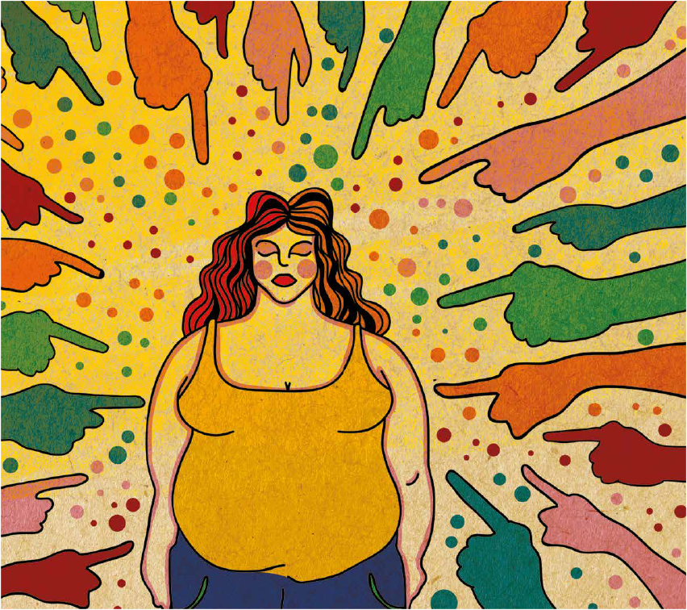

Definição de Gordo:
Uma pessoa considerada gorda possui gordura extra no corpo, por gula e/ou comer demais.
Definição de Obeso:
Uma pessoa considerada obesa possui uma doença crônica representada pelo acúmulo excessivo de gordura no
organismo, podendo desencadear outros problemas de saúde. A obesidade é apenas diagnosticada por um
médico a partir de exames relacionados.